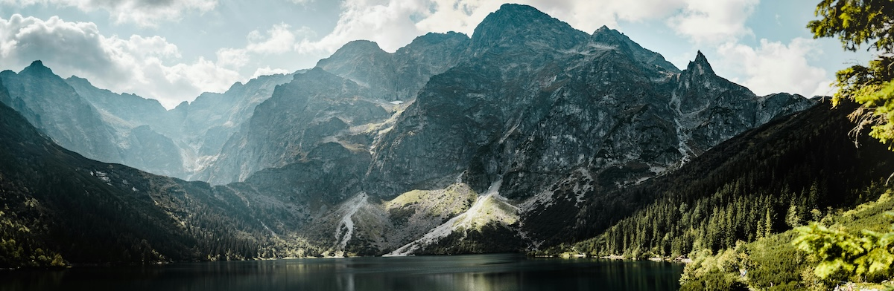

Panoramik Fotoğrafçılık: Geniş Açıyla Hikaye Anlatımı Sanatı
Panoramik fotoğrafçılık, sıradan bir kareye sığmayan geniş manzaraları yakalamanın en güzel yollarından biridir. Manzara çekimleri, şehir siluetleri, geniş iç mekanlar ve kalabalık etkinlikler gibi çok çeşitli konularda kullanılan bu teknik, fotoğrafçılara geniş perspektifler sunar. Peki, panoramik fotoğrafçılığa nasıl başlanır, hangi teknikleri bilmek gerekir ve nelere dikkat etmeliyiz? Bu yazıda tüm bu sorulara yanıt vermeye çalışacağım.
Panoramik Fotoğrafçılık Nedir?
Panoramik fotoğrafçılık, bir sahnenin geniş açıdan kaydedilmesi ve birden çok fotoğrafın bir araya getirilerek tek bir görüntü oluşturulması işlemidir. Çoğu zaman, özel bir lens ya da aygıt kullanmaksızın, çekilen fotoğrafları bir yazılım yardımıyla birleştirerek etkileyici bir panoramik görünüm elde edilir.
Ekipman Seçimi: Hangi Araçlar Gerekli?
Panoramik fotoğraf çekmek için özel bir kameraya gerek yoktur; ancak bazı ekipmanlar, görüntü kalitesini artırmaya yardımcı olabilir:
- Geniş Açı veya Normal Lens: Aşırı geniş açılı bir lens kullanmak, kenarlarda çarpıtmalara neden olabilir. Bunun yerine, standart bir geniş açı ya da normal bir lens tercih edilebilir.
- Tripod: Sabit ve düzgün bir çekim yapabilmek için tripod çok faydalıdır. Üstelik tripod başlığının panoramik hareket edebilen bir modeli, çekimlerinizi daha da kolaylaştırabilir.
- Panoramik Başlık: Profesyonel panoramik fotoğrafçılar için, yatay ve dikey hareket kabiliyeti sunan panoramik başlıklar çok yararlıdır.
Çekim Teknikleri: Panoramik Fotoğraf Nasıl Çekilir?
Panoramik fotoğraf çekiminde en önemli unsur, çekimlerin hizalanmış ve tutarlı bir şekilde yapılmasıdır:
- Kamera Ayarlarını Sabitleyin: Panoramik fotoğraflarda aynı pozlama değerlerini korumak önemlidir. Manuel modda diyafram, enstantane ve ISO değerlerinizi sabitleyin.
- Çekim Sırasına Dikkat Edin: Çekim yaparken, her kareyi bir öncekiyle %20–30 kadar örtüşecek şekilde çekin. Bu, yazılımın kareleri daha kolay birleştirmesini sağlar.
- Ufku Düz Tutun: Tripod kullanırken ufkun düz kalmasına dikkat edin. Eğik bir çekim, birleşim sırasında görüntüde bozulmalara yol açabilir.
Fotoğrafları Birleştirme: Hangi Yazılımlar Kullanılır?
Panoramik fotoğrafları birleştirmek için Adobe Lightroom, Photoshop, PTGui veya ücretsiz bir alternatif olan Hugin gibi yazılımlardan yararlanabilirsiniz. Yazılımlar, karelerin birleşim yerlerini otomatik olarak algılar ve kusursuz bir panoramik görüntü elde etmenizi sağlar.
- Lightroom: Kolay arayüzü sayesinde hızlı ve etkili bir şekilde panoramik görüntüler elde edebilirsiniz.
- Photoshop: Çok daha fazla düzenleme seçeneği sunan Photoshop, panorama fotoğraflarınızı ince detaylarına kadar optimize etmenize olanak tanır.
- PTGui: Gelişmiş panoramik birleştirme özelliklerine sahip olan PTGui, özellikle HDR panoramalar için oldukça etkilidir.
Panoramik Fotoğrafçılıkta Dikkat Edilmesi Gerekenler
Panoramik fotoğraf çekiminde mükemmel sonuçlar elde etmek için bazı ipuçlarına dikkat etmelisiniz:
- Aydınlatma Koşulları: Aynı ışık koşullarında çekim yapmaya çalışın. Işık değişimleri, birleşim yerlerinde renk farklılıklarına neden olabilir.
- Kompozisyon: Panoramik fotoğraflar, izleyiciyi içine çeken kompozisyonlara sahiptir. Merkeze ilgi çekici öğeler yerleştirerek görüntüye derinlik kazandırabilirsiniz.
- Aşırı Yakın Nesnelerden Kaçının: Çekim sırasında aşırı yakın nesneler, çerçeve geçişlerinde bozulmalara neden olabilir. Özellikle manzara çekimlerinde, uzaktaki objelere odaklanmak daha iyi sonuçlar verir.
İlham Verici Panoramik Çekim Örneklerini İnceleyin
Panoramik fotoğrafçılığa başlarken, profesyonel fotoğrafçıların panoramik çekimlerini incelemek ilham verici olabilir. Özellikle doğa fotoğrafçılığı, şehir manzaraları veya geniş iç mekan çekimlerinde kullanılan farklı perspektiflere göz atarak, kendi tarzınızı geliştirebilirsiniz.
Panoramik fotoğrafçılık, geniş açılı sahneleri bir araya getirme sanatıyla fotoğrafa yeni bir soluk kazandırıyor. Üstelik biraz pratikle ve uygun ekipmanlarla siz de kolayca panoramik fotoğraflar çekebilir, anılarınızı geniş bir perspektifte ölümsüzleştirebilirsiniz. Şimdi kamera ve tripodunuzu hazırlayın, doğanın ya da şehrin nefes kesici manzaralarını tek bir karede toplamaya başlayın!